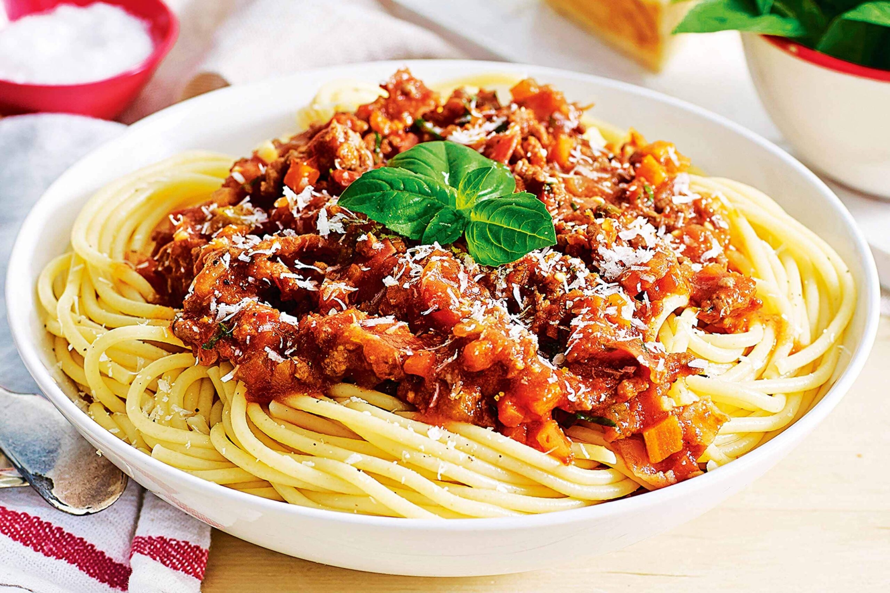
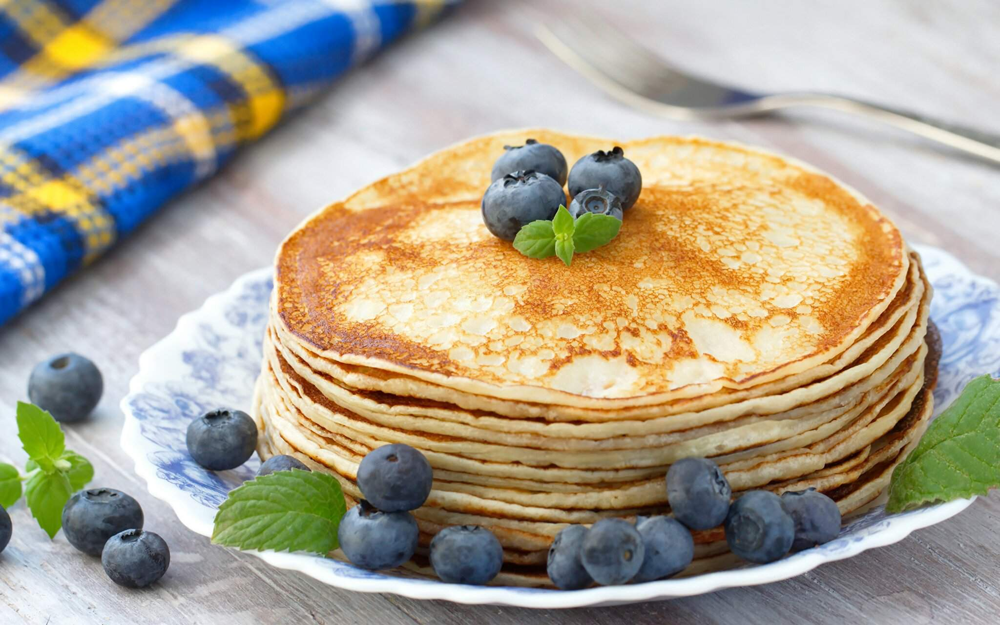

Спагетти болоньезе
Блюдо итальянского происхождения, разновидность сервировки пасты, а также используемый при такой сервировке мясной соус. Историческим типом пасты для подачи с соусом болоньезе является длинная плоская лапша тальятелле или короткие виды пасты, например, пассателли.
Пицца

Традиционное итальянское блюдо в виде круглой дрожжевой лепёшки, выпекаемой с уложенной сверху начинкой из томатного соуса, сыра и зачастую других ингредиентов.
Борщ

Борщ — горячий заправочный суп на основе свёклы, которая придаёт ему характерный красный цвет. В словаре В. И. Даля — род щей, похлёбка из квашеной свёклы, на говядине и свинине, или со свиным салом.
Блины
Блины́ — блюдо русской кухни, выпекаемое из жидкого,дрожжевого теста на сковороде. Подаются горячими с растопленным сливочным маслом, сметаной или ягодами.